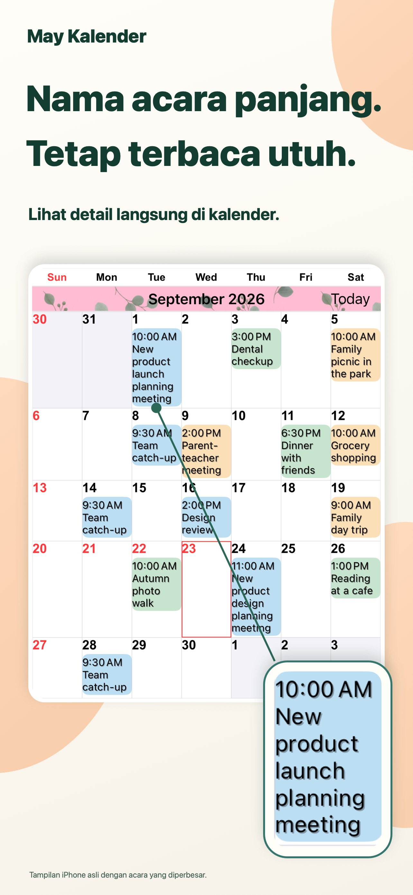
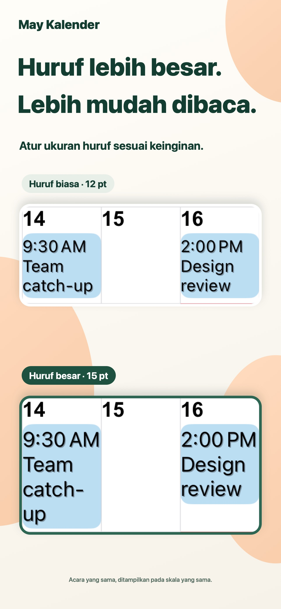
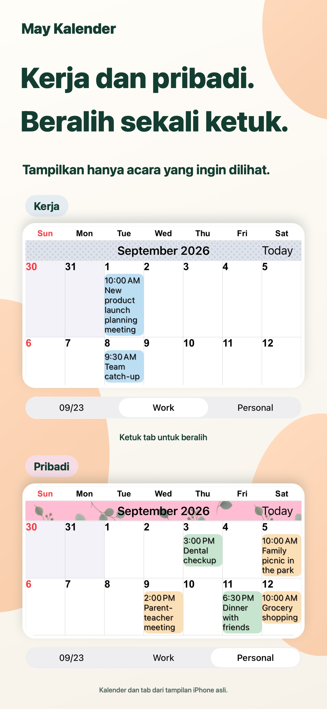
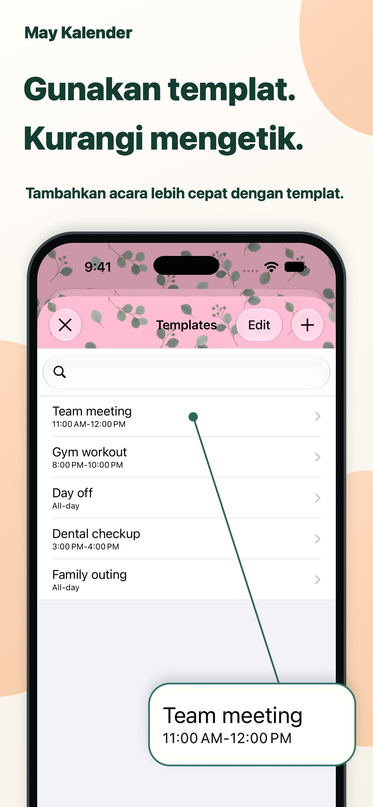

Tampilan khas Anda.
Gabungkan warna tema, latar acara, dan pola untuk membuat kalender Anda sendiri.
Setiap hari lebih jelas.
Judul acara panjang langsung di tampilan bulanan. Teks dan warna sesuai selera, agar rencana sehari-hari mudah dilihat.
Untuk iPhone dan iPadLihat di App StoreUnduh gratis · Pembelian dalam app

Merencanakan hari terasa lebih mudah.
Pekerjaan dan kehidupan pribadi di satu tempat.UNTUK KESEHARIAN ANDA
Sesuaikan kalender dengan cara Anda merencanakan.
Judul panjang ditampilkan dalam beberapa baris. Atur font dan ukurannya untuk membaca detail sambil tetap melihat seluruh bulan.

Simpan kombinasi kalender dan beralih antara rencana kerja dan pribadi dengan satu ketukan.

Simpan rapat, olahraga, dan janji sebagai templat. Ketuk dua kali pada tanggal, lalu pilih templat untuk menambahkan acara.

DETAIL KECIL, PERBEDAAN BESAR.
Gabungkan warna tema, latar acara, dan pola untuk membuat kalender Anda sendiri.
Pilih dari 20 jenis widget, termasuk widget khusus iPad.
Tampilkan hanya acara yang cocok dengan teks yang Anda masukkan.
TANYA JAWAB
App dapat diunduh gratis dan menawarkan pembelian dalam app. Periksa harga dan pilihan terbaru di App Store. Lihat di App Store
Ya, mendukung iPhone dan iPad. Beberapa widget hanya tersedia di iPad. Periksa persyaratan sistem terbaru di App Store.
Mendukung pengingat, hari libur, nomor minggu, dan informasi kalender lunar. Awal minggu dan zona waktu juga dapat diatur.
Notifikasi dikirim oleh app Kalender Apple. Anda dapat mengatur peringatan sebelum acara dimulai atau sebelum berakhir.
HARI-HARI LEBIH JELAS.
Mulai dengan kalender yang cocok untuk Anda.